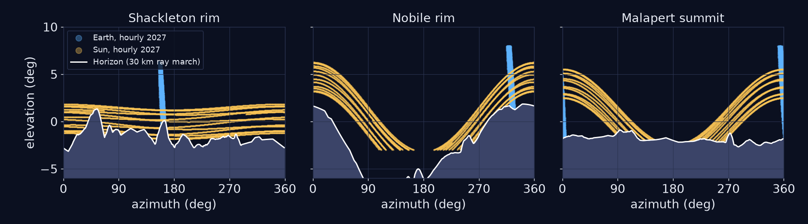
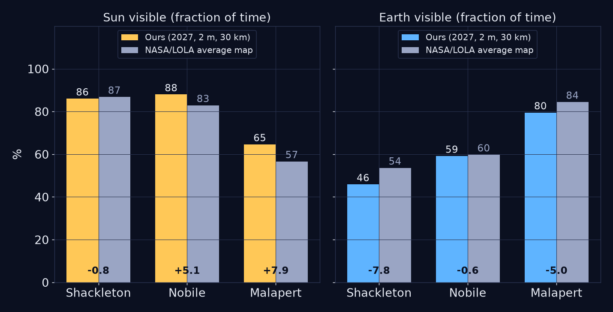

A landing-site navigator for the lunar south pole: when are the Sun and the Earth above the real terrain horizon, and for how long are they gone? Runs in a browser, no install.
Albedo
Team captain: Rızgar Ozan
Lunar Landing Site Navigator
NASA Space Apps Challenge 2026, Ankara
Aimed at Artemis-style landing-site planning: pick a site and a landing day, see how long the lander will be without power or without a direct link to Earth, and when the launch slips, compare the three sites on the new date.
Candidate sites: Shackleton rim · Nobile rim · Malapert summit
Best 2027 window at Shackleton: land on 12 Sep (Sun 100%, Earth 93% of the next 14 days). Slip 14 days and Earth drops to 0% (336 h without Earth); Malapert becomes the best option (score 60%).
On the Shackleton rim the Sun stays below the horizon for up to 147 hours in a row in 2027, and Earth is missing for up to 354 hours.
| NASA dataset | Used for |
|---|---|
| LRO LOLA LDEM_85S_20M_FLOAT, 20 m south polar DEM (PDS Geosciences Node) | Terrain, horizon |
| JPL Horizons hourly Sun and Earth az/el from each site, 2027 | Sun, Earth positions |
| NASA/LOLA-team AVGVISIB_85S_060M_201608 Sun and Earth visibility maps (NASA PGDA) | Validation |
Public domain. Credit: NASA/GSFC/LRO LOLA Science Team, NASA/JPL Horizons. Method after Mazarico et al. 2011.
Sites are picked by rule from LOLA data, not NASA's official region centres: the brightest rim pixel on a ring around Shackleton and around Nobile, and the DEM summit of Malapert (85.99°S, 2.06°E).
| Site | Sun visible* | Longest darkness | Earth visible* | Longest without Earth |
|---|---|---|---|---|
| Shackleton rim | 86.0% | 147 h | 45.9% | 354 h |
| Nobile rim | 88.0% | 151 h | 59.1% | 273 h |
| Malapert summit | 64.6% | 341 h | 79.5% | 143 h |

Horizon (30 km ray march) with hourly Sun and Earth tracks, 2027; below the white line a body is hidden. *Percent of the 8,760 hours of 2027; Sun fractions are upper bounds (see limits). What a planner takes from this: Malapert keeps Earth in view 79.5% of the year but has a 341 h dark spell, so it needs the largest battery. Shackleton and Nobile keep the Sun 86-88% of the time but lose Earth for up to 354 h and 273 h, so they need a relay or on-board data storage for those gaps.

Ours vs the NASA/LOLA-team average map at each site point. Numbers inside the bars: our value minus NASA's, in percentage points (Sun: -0.8, +5.1, +7.9; Earth: -7.8, -0.6, -5.0). NASA's map averages 18.6 years at surface height; ours is 2027 at 2 m.
Independent horizon code (every cell 4-30 km, no rays): mean horizon difference 0.09-0.12°, max 0.41°, Sun fraction within 1 point.
Multi-year 2026-2044 (one full 18.6-year cycle): across the 19 years the Sun fraction moves 2.9-3.1 points and the longest dark spell at most 3 h; Earth moves 4.9-9.6 points (libration).
DEM vertical error (Monte Carlo, 20 runs, assumed 1.5 m noise): Sun fraction 5-95% range is 0.3 points wide at Shackleton, 1.0 at Malapert, 1.6 at Nobile.
Sensitivity: observer height dominates. Shackleton Sun fraction is 45.0% / 86.0% / 90.1% at 0 / 2 / 5 m. Ray range: 94.1% at 2.5 km, 86.0% at 30 km.
Live demo
rizgarozan.github.io/albedo-spaceapps/web/
Code (GitHub)
github.com/RizgarOzan/albedo-spaceapps
Planner tab, Shackleton rim: best landing windows of 2027 and the delay scenario (12 Sep plan, +14 days).
LDEM_85S_20M_FLOAT south polar DEM, PDS Geosciences Node.AVGVISIB_85S_060M_201608 (Sun, Earth), NASA PGDA product 69.AI coding assistants (Anthropic Claude models and free open-weight models via OpenRouter) helped write the pipeline, viewer, tests and slide text under our direction. We reviewed the code and ran the scripts and tests ourselves. AI produces no number in the app: every value comes from NASA LOLA data and JPL Horizons, checked against NASA's published maps.